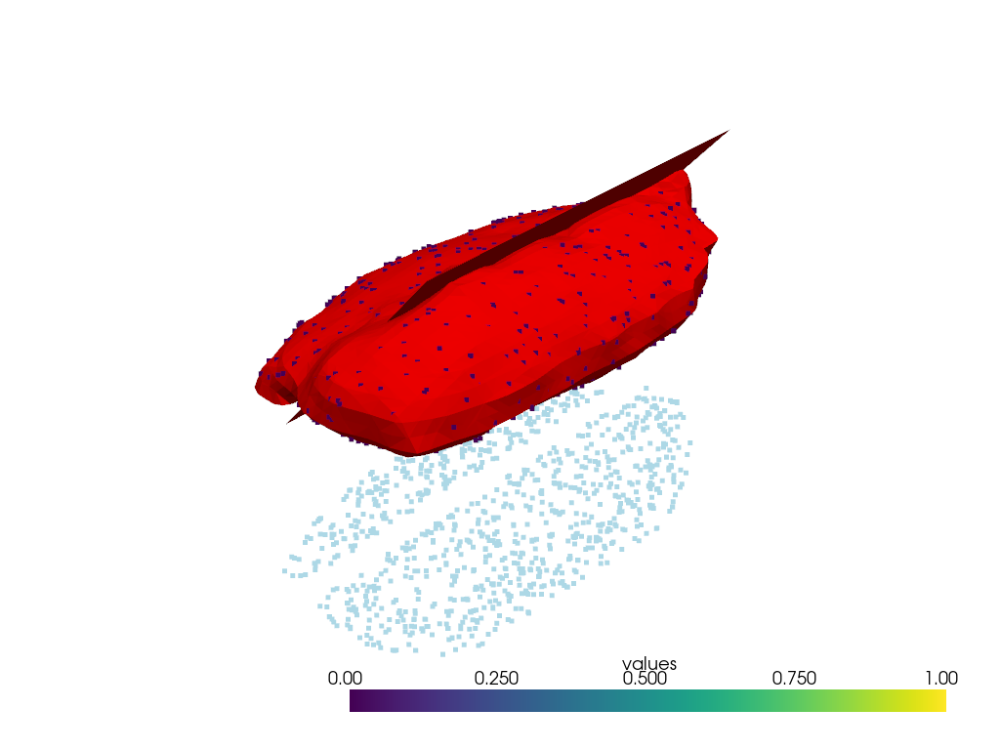

Note
Click here to download the full example code
3a. Modelling faults using structural frames¶
from LoopStructural import GeologicalModel
from LoopStructural.visualisation import LavaVuModelViewer
from LoopStructural.datasets import load_intrusion
import pandas as pd
import numpy as np
import matplotlib.pyplot as plt
data, bb = load_intrusion()
Modelling faults using structural frames¶
Standard implicit modelling techniques either treat faults as domain boundaries or use a step function in the implicit function to capture the displacement in the faulted surface.
Adding faults into the implicit function using step functions is limited because this does not capture the kinematics of the fault. It effectively defines the fault displacement by adding a value to the scalar field on the hanging wall of the fault. In the example below a 2-D ellipsoidal function is combined with a step function to show how the resulting geometry results in a shrinking shape. This would be representative of modelling an intrusion.

Out:
<matplotlib.contour.QuadContourSet object at 0x7f336ab54760>
LoopStructural applies structural frames to the fault geometry to capture the geometry and kinematics of the fault. A fault frame consisting of the fault surface, fault slip direction and fault extent are built from observations. The geometry of the deformed surface is then interpolated by first restoring the observations by combining the fault frame and an expected displacement model.
model = GeologicalModel(bb[0,:],bb[1,:])
model.set_model_data(data)
fault = model.create_and_add_fault('fault',
500,
nelements=10000,
steps=4,
interpolatortype='PLI',
buffer=0.3)
viewer = LavaVuModelViewer(model)
viewer.add_isosurface(fault,
isovalue=0
# slices=[0,1]#nslices=10
)
xyz = model.data[model.data['feature_name']=='strati'][['X','Y','Z']].to_numpy()
xyz = xyz[fault.evaluate(xyz).astype(bool),:]
viewer.add_vector_field(fault, locations= xyz)
viewer.add_points(model.data[model.data['feature_name']=='strati'][['X','Y','Z']],name='prefault')
viewer.rotation = [-73.24819946289062, -86.82220458984375, -13.912878036499023]
viewer.display()
displacement = 400#INSERT YOUR DISPLACEMENT NUMBER HERE BEFORE #
model = GeologicalModel(bb[0,:],bb[1,:])
model.set_model_data(data)
fault = model.create_and_add_fault('fault',
displacement,
nelements=2000,
steps=4,
interpolatortype='PLI',
buffer=2)
strati = model.create_and_add_foliation('strati',nelements=30000,interpolatortype='PLI',cgw=0.03)
model.update()
viewer = LavaVuModelViewer(model)
viewer.add_isosurface(strati,
isovalue=0)
# viewer.add_data(model.features[0][0])
viewer.add_data(strati)
viewer.add_isosurface(fault,isovalue=0
# slices=[0,1]#nslices=10
)
viewer.add_points(model.data[model.data['feature_name']=='strati'][['X','Y','Z']],name='prefault')
viewer.rotation = [-73.24819946289062, -86.82220458984375, -13.912878036499023]
viewer.display()

- 
Out:
0%| | 0/4 [00:00<?, ?it/s]
Interpolating fault: 0%| | 0/4 [00:00<?, ?it/s]
Interpolating fault: 50%|##### | 2/4 [00:00<00:00, 13.53it/s]
Interpolating strati: 75%|#######5 | 3/4 [00:00<00:00, 13.53it/s]
Interpolating strati: : 6it [00:16, 13.53it/s]
Interpolating strati: : 7it [00:25, 3.97s/it]
Interpolating strati: : 7it [00:25, 3.64s/it]
Total running time of the script: ( 0 minutes 41.896 seconds)